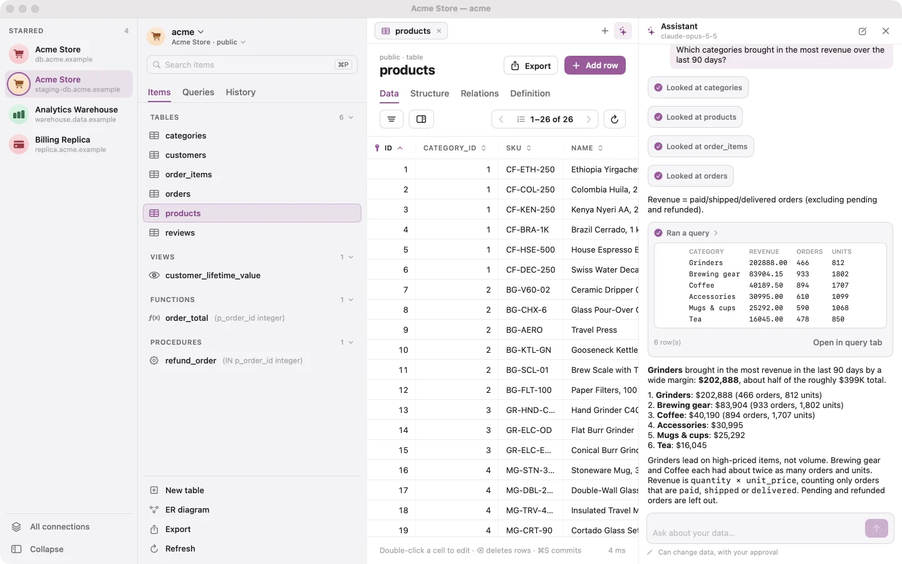
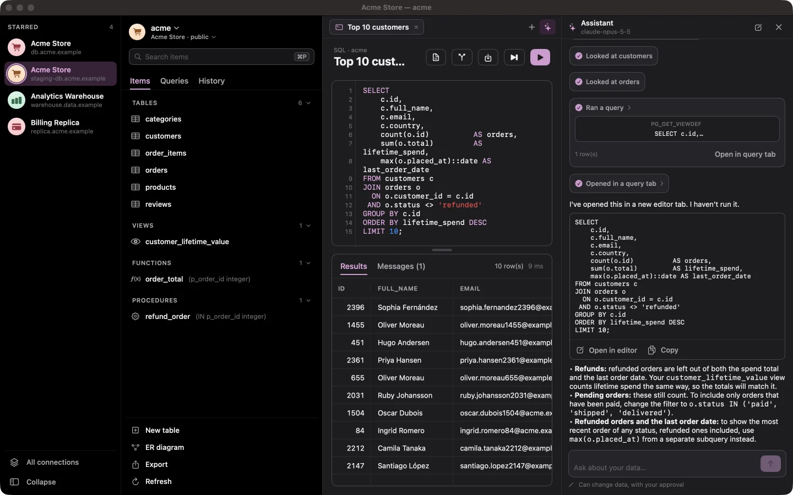
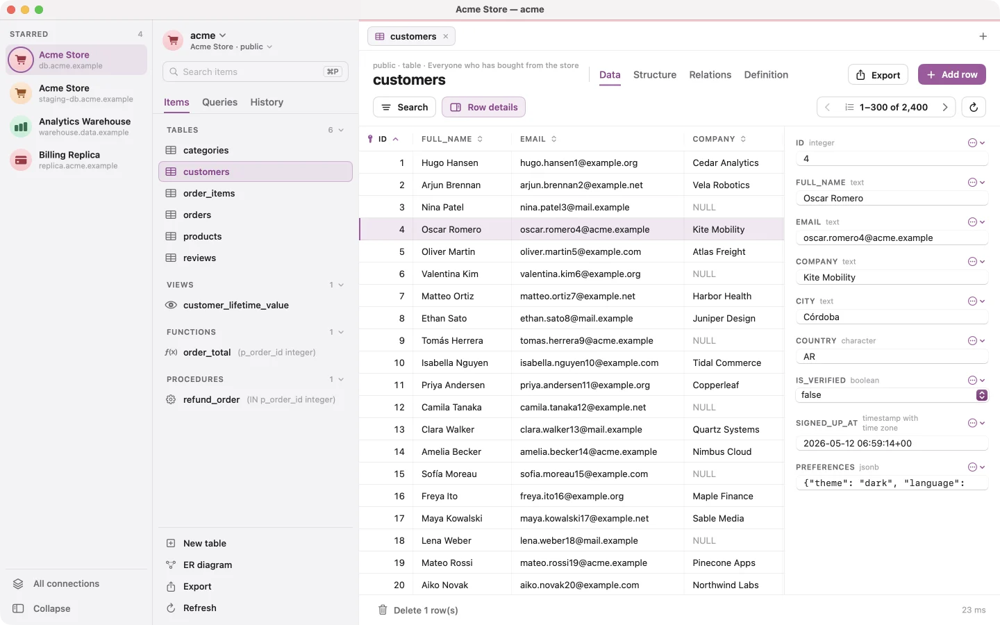
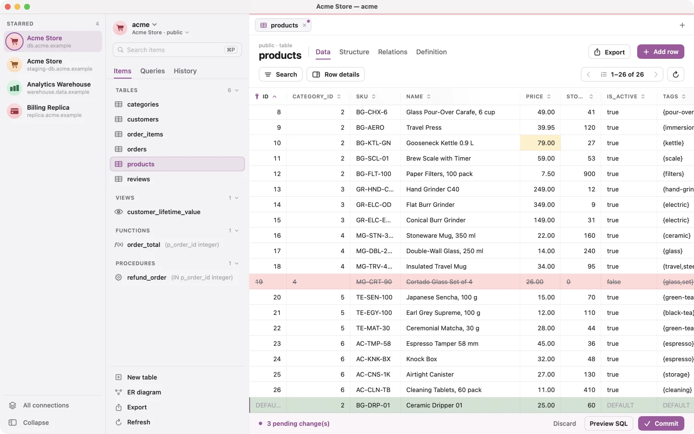
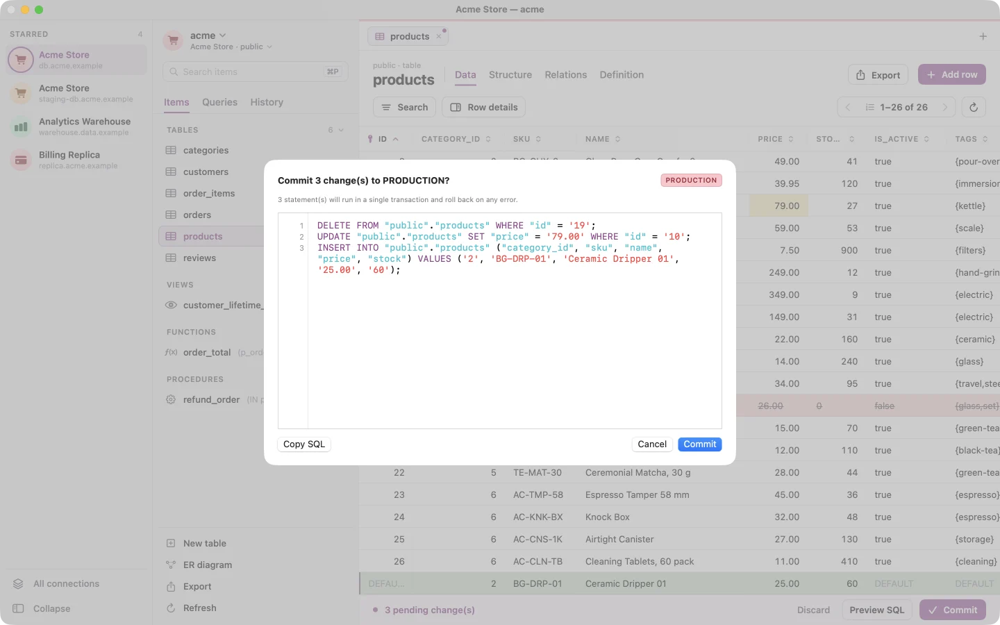
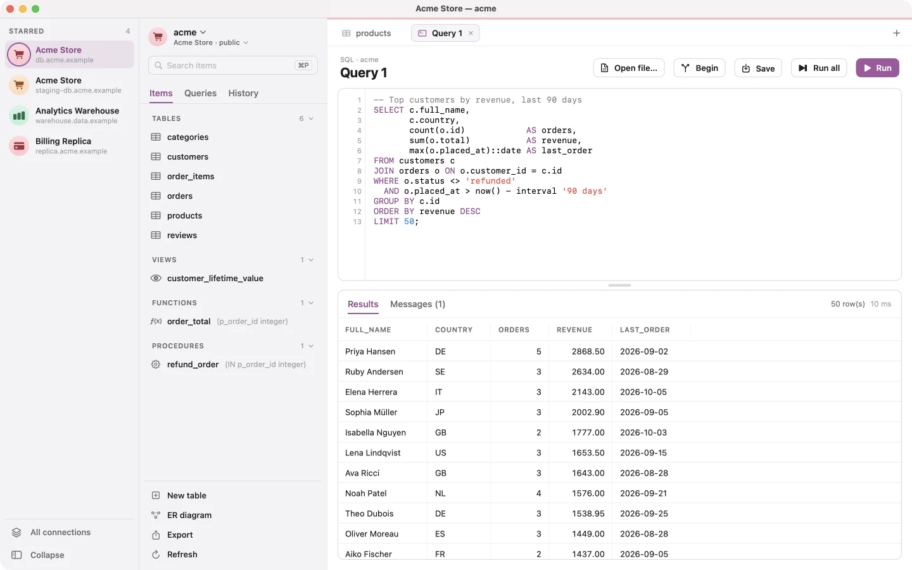
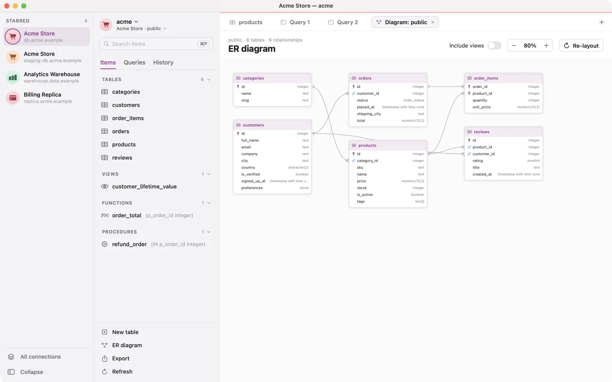
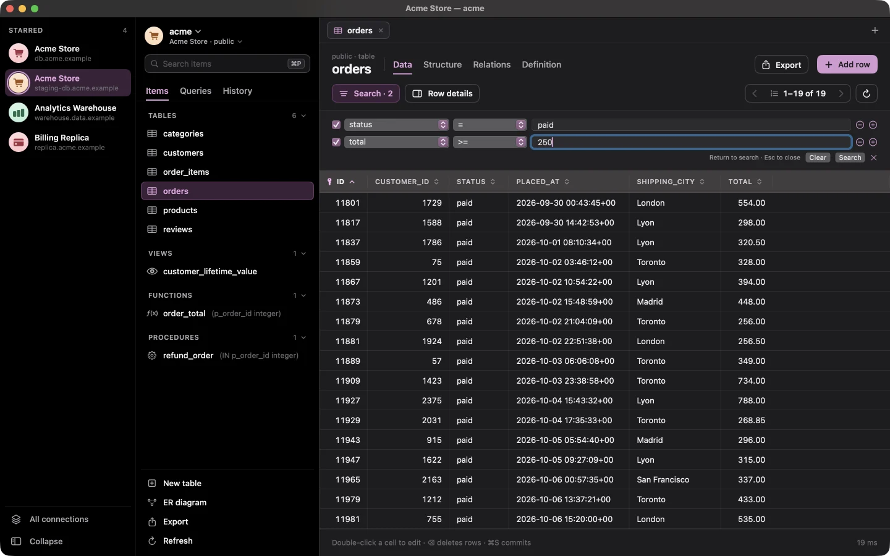
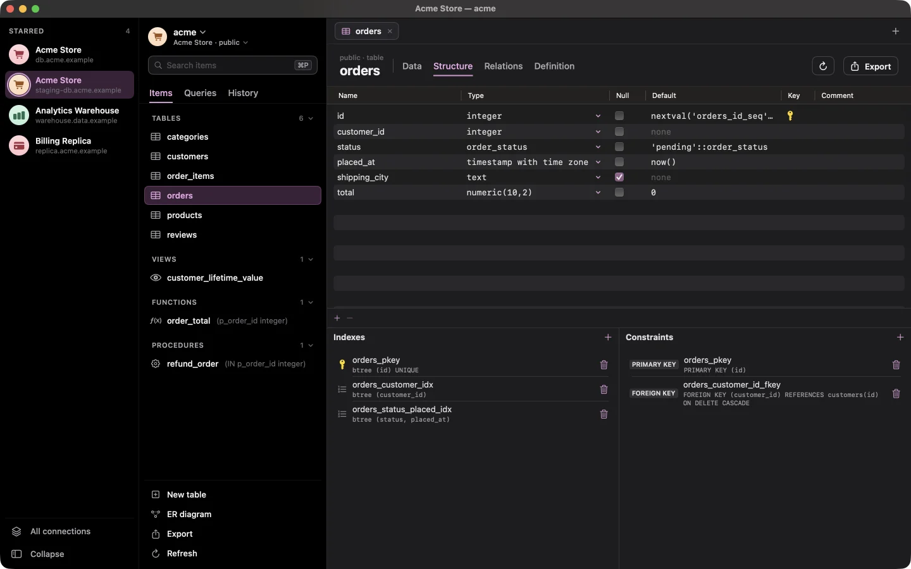

DBJoy
The AI-first PostgreSQL client for the Mac
Beautifully native, with an AI assistant that answers your questions and writes your SQL.









Highlights
- AI assistant (⌘J): ask questions in plain language. It reads your schema, runs read-only queries and answers with the numbers.
- SQL written for you: describe what you need and the query opens in a tab, ready to run
- Chats are saved automatically. Pick up where you left off, and organize them in folders
- Bring your own Anthropic or OpenAI key. Read-only by default; any change it proposes waits for your approval
- Safe editing: staged changes, one-transaction commits, SQL review on production
- SQL editor with alias-aware completion, multiple result sets and per-tab transactions; open and run
.sqlfiles - ⌘F search by column and operator, ⌘P to open anything, and ER diagrams
- Structure editing through reviewed ALTER statements
- SSH tunnels, SSL, read-only connections and Keychain passwords
- Connection icons and a starred bar to switch connections in one click
- CSV, JSON and SQL export, plus full pg_dump backups (pg_dump is built in)
- No account, no tracking. Light and dark themes